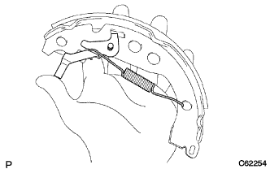

リヤブレーキ 分解 |
| 1. リヤタイヤ取りはずし |
| 2. ブレーキフルード抜き取り |
| 3. リヤブレーキ ドラム取りはずし |
 |
パーキングブレーキを解除し、リヤブレーキドラムを取りはずす。
| 4. ブレーキシュー(フロント)取りはずし |
 |
SSTを使用して、テンションスプリングをブレーキシューASSYから切り離し、パーキングブレーキシューストラットセットLHを取りはずす。
 |
SSTを使用して、リヤブレーキシューホールドダウンスプリングカップ、リヤブレーキシューホールドダウンスプリングおよびリヤブレーキシューホールドダウンスプリングピンを取りはずす。
リヤブレーキシューリターンスプリングを切り離し、ブレーキシュー(フロント)を取りはずす。
| 5. リヤブレーキオートマチックアジャスト レバー LH取りはずし |
|  |
リヤブレーキオートマチックアジャストレバートーションスプリングをはずし、リヤブレーキオートマチックアジャストレバーLHを取りはずす。
| 6. ブレーキシュー(リヤ)取りはずし |
リヤブレーキシューリターンスプリングをブレーキシュー(リヤ)から取りはずす。
 |
SSTを使用して、リヤブレーキシューホールドダウンスプリングカップ、リヤブレーキシューホールドダウンスプリングおよびリヤブレーキシューホールドダウンスプリングピンを取りはずす。
ニードルノーズプライヤを使用して、パーキングブレーキケーブルNo.3を切り離し、ブレーキシュー(リヤ)を取りはずす。
| 7. リヤブレーキ パーキングブレーキシュー レバーSUB-ASSY LH取りはずし |
マイナスドライバーを使用して、Cワッシャーをはずし、パーキングブレーキシューレバーLHを取りはずす。
| 8. リヤ ドラムブレーキ ブリーダ プラグ取りはずし |
| 9. LH FR OR UPR リヤホイールブレーキ シリンダASSY取りはずし |
ユニオンナットレンチ１０を使用して、リヤブレーキチユーブNo.４を切り離す。
ボルトをはずし、リヤホイールシリンダASSY LH FR(UPR)を取りはずす。
| 10. リヤホイ-ルシリンダカップキット取りはずし |
ホイールシリンダブーツ2個をホイールシリンダピストンから取りはずす。
ホイールシリンダピストン2個を取りはずす。
ホイールシリンダカップをそれぞれのホイールシリンダピストンから取りはずす。
リヤホイールシリンダコンプレッションンスプリングを取りはずす。